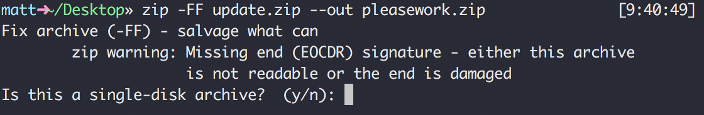

解救壞掉的 Zip
Mar 23, 2018
對壞掉之zip進行解壓縮, 解救一些檔案 !
問題
工作開發的 Hybrid App, 使用IBM MobileFirst SDK 。
iOS 在 direct update 過程至 onFinish時, callBack 丟出的 status為 ERROR_UNZIPPING。
找問題
1. 下載 App 並解壓縮 container
- 開啟 xCode > 點選 Window > Devices and Simulators
- 點選 INSTALLED APPS 中有問題的 APP > 點右下角齒輪圖案ICON > DOWNLOAD CONATAINERS
- 對下載的 .xcappdata 點選右鍵 > 顯示套件內容
- 對 AppData/tmp/update.zip 用 archive 進行解壓縮 (出現錯誤)

2. 強制解壓縮, 查看內容
- 以指令解壓縮 (出現錯誤)
1
zip update.zip

- 強制解壓縮, 解壓縮結果可能有掉封包、檔案不完全 (出現錯誤)
1
zip -FF update.zip --out pleasework.zip

- 錯誤(EOCDR)相關資訊: https://www.yodot.com/zip-repair/zip-file-error-missing-end-signature.html
以IBM提供 direct udpate 的 API 下載同一包 web resource:
參考API: https://mobilefirstplatform.ibmcloud.com/tutorials/ru/foundation/8.0/api/rest/runtime/1
[runtime-name]/api/directupdate/{version}/{checksum}/{delta}
比對兩包內容, 確實少了不少檔案
WAS / WAF Log
- 開啟 Web Sphere 的 log 規則為:=info:com.worklight.=all:com.ibm.worklight.=all:com.ibm.mfp.=all
- 調閱 WAF Log, 看到在 direct update 過程中 packed/ unpacked 大小不一致
推理
- 以 API 下載的 zip 確實可以正確解開, 內容也正確: 表示 Mobile First DB上的 zip 正常
- 下載的 zip 為不可解之 broken zip
得出結論
- 在傳送過程中掉封包, 猜測 WAF 規則擋住部分封包, 實際請客戶關掉 WAF 規則後, 便解決問題